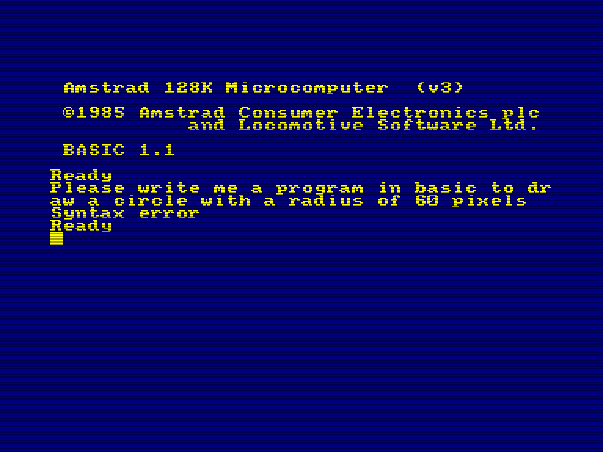
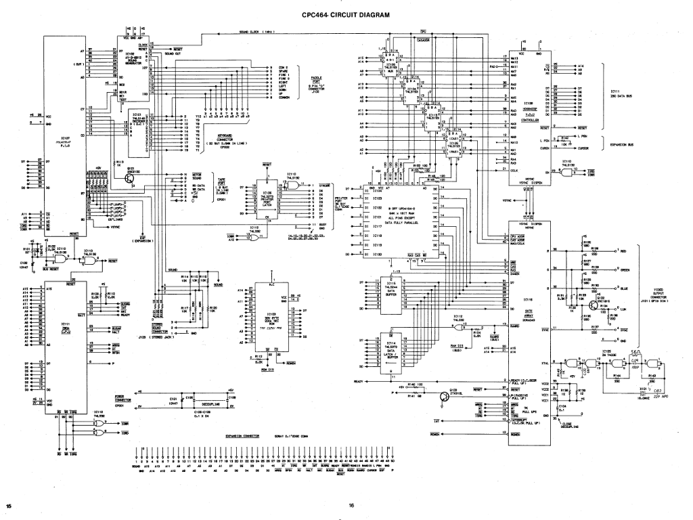
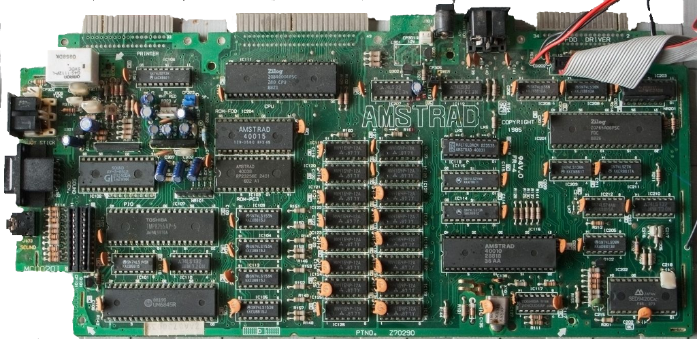
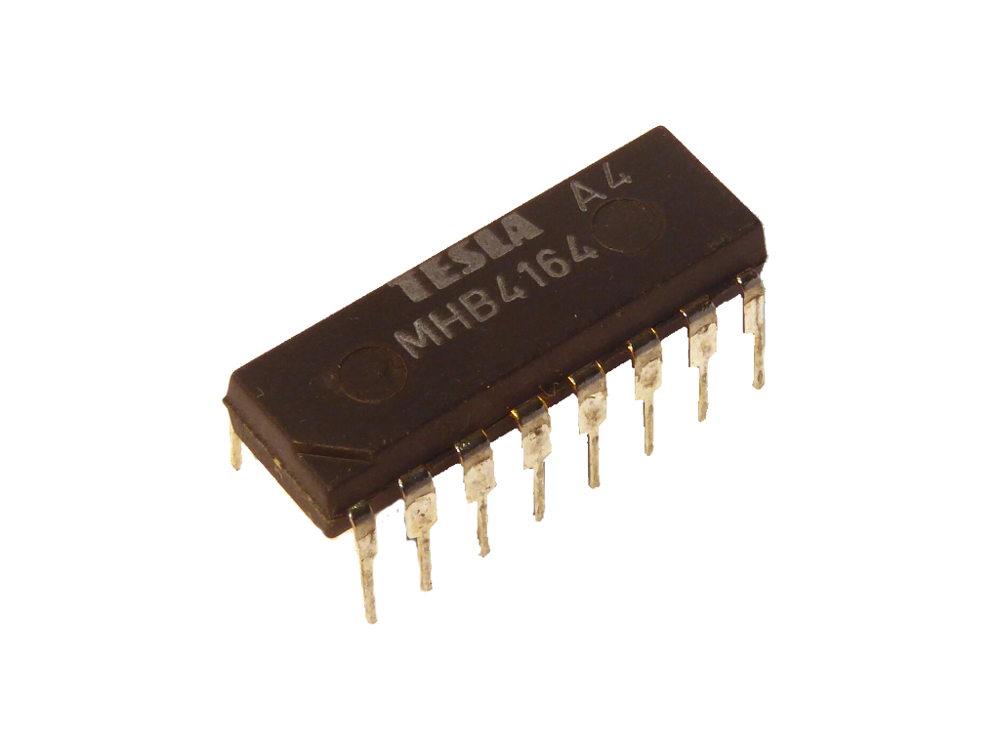

Ressuscitons
les ordinosaures
comment développer un émulateur
Souvenez-vous
Ce jingle vous dit quelque-chose ?
Takafumi Fujisawa
Amstrad GPT

Back to the Future
Apple II
MOS 6502 (8-bit), 4kb of ram
(release date : Jun. 1977)
Atari VCS 2600
MOS 6507 (8-bit), 128 bytes or ram
(release date : Oct. 1977)
Sinclair ZX81
Zilog Z80 (8-bit), 1kb of ram
(release date : Mar. 1981)
IBM PC
Intel 8088 (16-bit), 16kb of ram
(release date : Aug. 1981)
Nintendo NES
MOS 6502 (8-bit), 2kb of ram
(release date : Jul. 1983)
Amstrad CPC
Zilog Z80 (8-bit), 128kb of ram
(release date : Apr. 1984)
Atari ST
Motorola 68000 (16/32-bit), 512kb of ram
(release date : Jun. 1985)
Commodore Amiga
Motorola 68000 (16/32-bit), 512kb of ram
(release date : Jul. 1985)
Sega Master System
Zilog Z80 (8-bit), 8kb of ram
(release date : Oct. 1985)
Sega Mega Drive
Motorola 68000 (16/32-bit), 72kb of ram
(release date : Oct. 1988)
Nintendo SNES
MOS 65C816 (8/16-bit), 128kb of ram
(release date : Nov. 1990)
Sony PlayStation
MIPS R3051 (32-bit), 2mb of ram
(release date : Dec. 1994)
Et tellement d'autres machines !
Différence entre
simulateur et émulateur
Un simulateur
est un logiciel imitant le comportement d'un système sans réutiliser les parties originales du système cible (i.e ROMs, logiciels, ...)
Un simulateur
a pour objectif de faire croire à un utilisateur qu'il utilise un matériel et/ou un logiciel original
Un émulateur
est un logiciel reproduisant le comportement d'un système en réutilisant les parties originales du système cible (i.e ROMs, logiciels, ...)
Un émulateur
a pour objectif de faire croire à un logiciel qu'il fonctionne sur le matériel original
Que peut-on émuler ?
Des systèmes très variés
- Des ordinateurs
- Des consoles
- Des bornes d'arcade
- Etc.
Tout peut-être émulé
Peu importe le système invité
cela dépend des ressources disponibles
sur le système hôte
Est-ce légal ?
Réponse courte
C'EST LÉGAL
Réponse longue
CELA DÉPEND
Légalement
copier un support et redistribuer cette copie sans l'accord de leur(s) auteur(s)
EST INTERDIT !
je vous aurai prévenu
Cependant
si le copyright a expiré
la copie est autorisée !
enfin en général
Néanmoins
Certains éditeurs ont autorisé la redistribution
de leur propriété intellectuelle
“ sous certaines conditions ”
Se préparer
Identifiez votre cible
know your foe
“ ce qui va sans dire, va mieux en le disant ”
Récupérez
des livres, des documents, etc.
dénichez les ouvrages de référence, des documents secrets, etc ...
Collectez
des schémas, des infos, etc.
mettez la main sur des spécifications, des service manuals, ...

Faites
du reverse engineering
si c'est nécessaire et si vous avez les compétences en éléctronique

Choisissez
votre système d'exploitation
ou plusieurs mais plus complexe à développer
Choisissez
votre langage de programmation
de préférence un langage compilé pour les performances
Architecture d'un émulateur
Cinq sous-systèmes principaux
1. sous-système central
2. sous-système vidéo
3. sous-système audio
4. sous-système d'entrées
5. sous-système périphériques
en omettant bien sûr l'interface utilisateur
Sous-système central
La RAM / La ROM
c'est votre mémoire de travail
c'est quasiment la partie la plus facile à développer

La RAM / La ROM
class RamBank
{
public: // public interface
RamBank();
virtual ~RamBank();
auto data() -> uint8_t*
{
return _data;
}
protected: // protected data
uint8_t _data[16384];
};
Le microprocesseur
c'est le coeur de votre émulateur
Spoiler alert : c'est la partie la plus complexe à développer
Le microprocesseur
Son architecture va influer
sur la complexité de votre code
Et de loin !
Une histoire d'indien
Grand indien ou Petit indien ?
That's the question !

Les drapeaux
struct Z80_Flags
{
static constexpr uint8_t SF = 0x80; /* sign */
static constexpr uint8_t ZF = 0x40; /* zero */
static constexpr uint8_t XF = 0x20; /* undocumented flag */
static constexpr uint8_t HF = 0x10; /* halfcarry / halfborrow */
static constexpr uint8_t YF = 0x08; /* undocumented flag */
static constexpr uint8_t PF = 0x04; /* parity */
static constexpr uint8_t OF = 0x04; /* overflow */
static constexpr uint8_t NF = 0x02; /* add / sub */
static constexpr uint8_t CF = 0x01; /* carry / borrow */
};
Les drapeaux internes
struct Z80_InternalFlags
{
static constexpr uint8_t HAS_HLT = 0x80; /* cpu is halted */
static constexpr uint8_t HAS_NMI = 0x40; /* pending nmi */
static constexpr uint8_t HAS_INT = 0x20; /* pending int */
static constexpr uint8_t HAS_XYZ = 0x10; /* not used */
static constexpr uint8_t HAS_IM2 = 0x08; /* interrupt mode #2 */
static constexpr uint8_t HAS_IM1 = 0x04; /* interrupt mode #1 */
static constexpr uint8_t HAS_IFF2 = 0x02; /* interrupt flip-flop #2 */
static constexpr uint8_t HAS_IFF1 = 0x01; /* interrupt flip-flop #1 */
};
Modélisation d'un registre
struct Z80_Register
{
union
{
uint32_t quad;
#ifdef HOST_IS_BIG_ENDIAN
struct { uint16_t h, l; } word;
struct { uint8_t a, b, c, d; } byte;
#endif
#ifdef HOST_IS_LITTLE_ENDIAN
struct { uint16_t l, h ; } word;
struct { uint8_t d, c, b, a; } byte;
#endif
} u;
};
Modélisation de l'état
struct Z80_State
{
struct
{
Z80_Register WZ; /* WZ hidden register */
Z80_Register AF; /* AF and AF' */
Z80_Register BC; /* BC and BC' */
Z80_Register DE; /* DE and DE' */
Z80_Register HL; /* HL and HL' */
Z80_Register IX; /* IX Index */
Z80_Register IY; /* IY Index */
Z80_Register SP; /* Stack Pointer */
Z80_Register PC; /* Program Counter */
Z80_Register IR; /* Interrupt and Refresh */
Z80_Register IF; /* IFF, IM and Control */
} registers;
struct
{
uint32_t m_cycles; /* m-cycles counter */
uint32_t t_states; /* t-states counter */
int32_t ccounter; /* internal counter */
} counters;
};
Modélisation de l'interface
class Z80_Interface
{
public: // public interface
virtual uint8_t z80_mreq_m1(Z80_Processor&, const uint16_t address, const uint8_t data) = 0;
virtual uint8_t z80_mreq_rd(Z80_Processor&, const uint16_t address, const uint8_t data) = 0;
virtual uint8_t z80_mreq_wr(Z80_Processor&, const uint16_t address, const uint8_t data) = 0;
virtual uint8_t z80_iorq_m1(Z80_Processor&, const uint16_t address, const uint8_t data) = 0;
virtual uint8_t z80_iorq_rd(Z80_Processor&, const uint16_t address, const uint8_t data) = 0;
virtual uint8_t z80_iorq_wr(Z80_Processor&, const uint16_t address, const uint8_t data) = 0;
};
Modélisation du processeur
class Z80_Processor
{
public: // public interface
Z80_Processor(Z80_Interface& interface)
: _state()
, _interface(interface)
{
}
void run();
void reset();
protected: // protected data
Z80_State _state;
Z80_Interface& _interface;
};
Executer le code de l'invité
Il existe trois grandes techniques
- L'interpreteur
- La translation statique de code
- La translation dynamique de code
L'interpreteur
Cette technique est la plus simple à mettre en oeuvre
void Z80_Processor::run()
{
const uint8_t opcode = _interface.z80_mreq_m1(*this, _state.registers.PC.u.word.l++, 0x00);
switch(opcode) {
case 0x00: // nop
_state.counters.m_cycles += 1;
_state.counters.t_states += 4;
_state.counters.ccounter -= 4;
break;
case 0x01: // ...
// ...
break;
case 0x78: // ld a,b
_state.registers.AF.u.byte.c = _state.registers.BC.u.byte.c;
_state.counters.m_cycles += 1;
_state.counters.t_states += 4;
_state.counters.ccounter -= 4;
break;
case 0xff: // ...
// ...
break;
default:
break;
}
}
La translation statique de code
Cette technique combine un interpreteur et un recompilateur statique
void Z80_Processor::recompile(InputBlock& guest, BasicBlock& host)
{
switch(guest.read()) {
case 0x00: // nop
host.emit_nop(guest.address(), 1, 4);
break;
// ....
case 0x78: // ld a,b
host.emit_mov(guest.address(), REG_A, REG_B, 1, 4);
break;
// ....
default:
break;
}
}
void Z80_Processor::run();
{
// on récupère la prochaine addresse
const uint16_t address = _state.registers.PC.u.word.l
// on récupère un block associé
const BasicBlock& block(BasicBlockCache.getBasicBlock(address));
// si le bloc est valide, on exécute le code recompilé
// sinon on utilise l'interpreteur comme méthode fallback
if(block.isValid()) {
block.execute();
}
else {
runInterpreter();
}
...
}
La translation dynamique de code
Cette technique combine un interpreteur et un recompilateur dynamique
void Z80_Processor::run();
{
// on récupère la prochaine addresse
const uint16_t address = _state.registers.PC.u.word.l
// on récupère un block associé
const BasicBlock& block(BasicBlockCache.getBasicBlock(address));
// si le bloc est valide, on exécute le code recompilé
// sinon on recompile à la volée le code présent dans la mémoire
if(block.isValid()) {
block.execute();
}
else {
recompileAndExecute(BasicBlockCache.createBasicBlock(address));
}
...
}
Sous-système vidéo
la frame-time
L'émulateur est toujours synchronisé
sur la durée d'une image
Soit en général 20.00ms (50Hz) ou 16,67ms (60Hz)
Le frame-skipping
L'émulateur peut parfois omettre
de dessiner quelques images
Cela permet de garder une émulation temps réel sans dégradation perceptible
Cathode Ray Tube Controller
Le controlleur vidéo est responsable
des signaux de synchronisation
Video Gate Array
La video gate-array est responsable
des signaux vidéo
Video Display Processor
Le video display processor est responsable
des signaux de synchronisation et vidéo
Des composants simples
Ce sont de simples machines à états
void mc6845_clock(MC6845* mc6845)
{
int old_h_sync = mc6845->h_sync;
int old_v_sync = mc6845->v_sync;
if(mc6845->h_sync_counter > 0) {
if(--mc6845->h_sync_counter == 0) {
mc6845->h_sync = 0;
}
}
if(++mc6845->h_counter == (mc6845->reg_file[0] + 1)) { /* Horiz. Total */
mc6845->h_counter = 0;
if(mc6845->v_sync_counter > 0) {
if(--mc6845->v_sync_counter == 0) {
mc6845->v_sync = 0;
}
}
if(++mc6845->r_counter == (mc6845->reg_file[9] + 1)) { /* Raster Total */
mc6845->r_counter = 0;
if(++mc6845->v_counter == (mc6845->reg_file[4] + 1)) { /* Verti. Total */
mc6845->v_counter = 0;
}
}
}
if((mc6845->h_sync == 0) && (mc6845->h_counter == mc6845->reg_file[2])) { /* Horiz. Sync Pos. */
mc6845->h_sync = 1;
if((mc6845->h_sync_counter = (mc6845->reg_file[3] >> 0) & 0x0f) == 0) {
mc6845->h_sync_counter = 16;
}
}
if((mc6845->v_sync == 0) && (mc6845->v_counter == mc6845->reg_file[7])) { /* Verti. Sync Pos. */
mc6845->v_sync = 1;
if((mc6845->v_sync_counter = (mc6845->reg_file[3] >> 4) & 0x0f) == 0) {
mc6845->v_sync_counter = 16;
}
}
if(mc6845->v_sync != old_v_sync) {
(*mc6845->vsync)(mc6845);
}
if(mc6845->h_sync != old_h_sync) {
(*mc6845->hsync)(mc6845);
}
}
Le blitter
Permet de générer l'image
de l'invité vers l'hôte
static void amstrad_cpc_paint_08bpp(AMSTRAD_CPC_EMULATOR *self)
{
XcpcBlitter *blitter = self->blitter;
GdevMC6845 *mc6845 = self->mc6845;
GdevGArray *garray = self->garray;
unsigned int sa = ((mc6845->reg_file[12] << 8) | mc6845->reg_file[13]);
unsigned int hd = (mc6845->reg_file[1] < 48 ? mc6845->reg_file[1] : 48);
unsigned int hp = ((XCPC_BLITTER_WIDTH >> 0) - (hd << 4)) >> 1;
unsigned int mr = mc6845->reg_file[9] + 1;
unsigned int vt = mc6845->reg_file[4] + 1;
unsigned int vd = (mc6845->reg_file[6] < 39 ? mc6845->reg_file[6] : 39);
unsigned int vp = ((XCPC_BLITTER_HEIGHT >> 1) - (vd * mr)) >> 1;
struct _scanline *sl = NULL;
guint8 *dst = (guint8 *) blitter->image->data, *nxt = dst;
guint8 pixel;
unsigned int cx, cy, ra;
guint16 addr;
guint16 bank;
guint16 disp;
guint8 data;
sl = &self->scanline[(vt * mr) - (1 * vp)];
for(cy = 0; cy < vp; cy++) {
nxt += XCPC_BLITTER_WIDTH;
pixel = sl->ink[16];
for(cx = 0; cx < XCPC_BLITTER_WIDTH; cx++) {
*dst++ = *nxt++ = pixel;
}
dst = nxt; sl++;
}
sl = &self->scanline[6];
for(cy = 0; cy < vd; cy++) {
for(ra = 0; ra < mr; ra++) {
nxt += XCPC_BLITTER_WIDTH;
switch(sl->mode) {
case 0x00:
pixel = sl->ink[16];
for(cx = 0; cx < hp; cx++) {
*dst++ = *nxt++ = pixel;
}
for(cx = 0; cx < hd; cx++) {
addr = ((sa & 0x3000) << 2) | ((ra & 0x0007) << 11) | (((sa + cx) & 0x03ff) << 1);
bank = (addr >> 14);
disp = (addr & 0x3fff);
/* pixel 0 */
data = self->ram_bank[bank]->data[disp | 0];
data = garray->mode0[data];
pixel = sl->ink[data & 0x0f];
*dst++ = *nxt++ = pixel;
*dst++ = *nxt++ = pixel;
*dst++ = *nxt++ = pixel;
*dst++ = *nxt++ = pixel;
/* pixel 1 */
data >>= 4;
pixel = sl->ink[data & 0x0f];
*dst++ = *nxt++ = pixel;
*dst++ = *nxt++ = pixel;
*dst++ = *nxt++ = pixel;
*dst++ = *nxt++ = pixel;
/* pixel 0 */
data = self->ram_bank[bank]->data[disp | 1];
data = garray->mode0[data];
pixel = sl->ink[data & 0x0f];
*dst++ = *nxt++ = pixel;
*dst++ = *nxt++ = pixel;
*dst++ = *nxt++ = pixel;
*dst++ = *nxt++ = pixel;
/* pixel 1 */
data >>= 4;
pixel = sl->ink[data & 0x0f];
*dst++ = *nxt++ = pixel;
*dst++ = *nxt++ = pixel;
*dst++ = *nxt++ = pixel;
*dst++ = *nxt++ = pixel;
}
pixel = sl->ink[16];
for(cx = 0; cx < hp; cx++) {
*dst++ = *nxt++ = pixel;
}
break;
case 0x01:
pixel = sl->ink[16];
for(cx = 0; cx < hp; cx++) {
*dst++ = *nxt++ = pixel;
}
for(cx = 0; cx < hd; cx++) {
addr = ((sa & 0x3000) << 2) | ((ra & 0x0007) << 11) | (((sa + cx) & 0x03ff) << 1);
bank = (addr >> 14);
disp = (addr & 0x3fff);
/* pixel 0 */
data = self->ram_bank[bank]->data[disp | 0];
data = garray->mode1[data];
pixel = sl->ink[data & 0x03];
*dst++ = *nxt++ = pixel;
*dst++ = *nxt++ = pixel;
/* pixel 1 */
data >>= 2;
pixel = sl->ink[data & 0x03];
*dst++ = *nxt++ = pixel;
*dst++ = *nxt++ = pixel;
/* pixel 2 */
data >>= 2;
pixel = sl->ink[data & 0x03];
*dst++ = *nxt++ = pixel;
*dst++ = *nxt++ = pixel;
/* pixel 3 */
data >>= 2;
pixel = sl->ink[data & 0x03];
*dst++ = *nxt++ = pixel;
*dst++ = *nxt++ = pixel;
/* pixel 0 */
data = self->ram_bank[bank]->data[disp | 1];
data = garray->mode1[data];
pixel = sl->ink[data & 0x03];
*dst++ = *nxt++ = pixel;
*dst++ = *nxt++ = pixel;
/* pixel 1 */
data >>= 2;
pixel = sl->ink[data & 0x03];
*dst++ = *nxt++ = pixel;
*dst++ = *nxt++ = pixel;
/* pixel 2 */
data >>= 2;
pixel = sl->ink[data & 0x03];
*dst++ = *nxt++ = pixel;
*dst++ = *nxt++ = pixel;
/* pixel 3 */
data >>= 2;
pixel = sl->ink[data & 0x03];
*dst++ = *nxt++ = pixel;
*dst++ = *nxt++ = pixel;
}
pixel = sl->ink[16];
for(cx = 0; cx < hp; cx++) {
*dst++ = *nxt++ = pixel;
}
break;
case 0x02:
pixel = sl->ink[16];
for(cx = 0; cx < hp; cx++) {
*dst++ = *nxt++ = pixel;
}
for(cx = 0; cx < hd; cx++) {
addr = ((sa & 0x3000) << 2) | ((ra & 0x0007) << 11) | (((sa + cx) & 0x03ff) << 1);
bank = (addr >> 14);
disp = (addr & 0x3fff);
/* pixel 0 */
data = self->ram_bank[bank]->data[disp | 0];
data = garray->mode2[data];
pixel = sl->ink[data & 0x01];
*dst++ = *nxt++ = pixel;
/* pixel 1 */
data >>= 1;
pixel = sl->ink[data & 0x01];
*dst++ = *nxt++ = pixel;
/* pixel 2 */
data >>= 1;
pixel = sl->ink[data & 0x01];
*dst++ = *nxt++ = pixel;
/* pixel 3 */
data >>= 1;
pixel = sl->ink[data & 0x01];
*dst++ = *nxt++ = pixel;
/* pixel 4 */
data >>= 1;
pixel = sl->ink[data & 0x01];
*dst++ = *nxt++ = pixel;
/* pixel 5 */
data >>= 1;
pixel = sl->ink[data & 0x01];
*dst++ = *nxt++ = pixel;
/* pixel 6 */
data >>= 1;
pixel = sl->ink[data & 0x01];
*dst++ = *nxt++ = pixel;
/* pixel 7 */
data >>= 1;
pixel = sl->ink[data & 0x01];
*dst++ = *nxt++ = pixel;
/* pixel 0 */
data = self->ram_bank[bank]->data[disp | 1];
data = garray->mode2[data];
pixel = sl->ink[data & 0x01];
*dst++ = *nxt++ = pixel;
/* pixel 1 */
data >>= 1;
pixel = sl->ink[data & 0x01];
*dst++ = *nxt++ = pixel;
/* pixel 2 */
data >>= 1;
pixel = sl->ink[data & 0x01];
*dst++ = *nxt++ = pixel;
/* pixel 3 */
data >>= 1;
pixel = sl->ink[data & 0x01];
*dst++ = *nxt++ = pixel;
/* pixel 4 */
data >>= 1;
pixel = sl->ink[data & 0x01];
*dst++ = *nxt++ = pixel;
/* pixel 5 */
data >>= 1;
pixel = sl->ink[data & 0x01];
*dst++ = *nxt++ = pixel;
/* pixel 6 */
data >>= 1;
pixel = sl->ink[data & 0x01];
*dst++ = *nxt++ = pixel;
/* pixel 7 */
data >>= 1;
pixel = sl->ink[data & 0x01];
*dst++ = *nxt++ = pixel;
}
pixel = sl->ink[16];
for(cx = 0; cx < hp; cx++) {
*dst++ = *nxt++ = pixel;
}
break;
}
dst = nxt; sl++;
}
sa += hd;
}
sl = &self->scanline[(vd * mr) + (0 * vp)];
for(cy = 0; cy < vp; cy++) {
nxt += XCPC_BLITTER_WIDTH;
pixel = sl->ink[16];
for(cx = 0; cx < XCPC_BLITTER_WIDTH; cx++) {
*dst++ = *nxt++ = pixel;
}
dst = nxt; sl++;
}
if(settings.no_fps == FALSE) {
char *str = self->stats; int len = 0;
guint8 fg = blitter->palette[garray->ink[0x01]].pixel;
guint8 bg = blitter->palette[garray->ink[0x10]].pixel;
guint8 *pt0 = (guint8 *) ((guint8 *) blitter->image->data + ((blitter->image->height - 9) * blitter->image->bytes_per_line));
while(*str != 0) {
guint8 *pt1 = pt0;
for(cy = 0; cy < 8; cy++) {
guint8 *pt2 = pt1;
data = font_bits[((*str & 0x7f) << 3) + cy];
for(cx = 0; cx < 8; cx++) {
*pt2++ = (data & 0x01 ? fg : bg); data >>= 1;
}
pt1 = (guint8 *) (((guint8 *) pt1) + blitter->image->bytes_per_line);
}
pt0 += 8; str++; len++;
}
}
(void) xcpc_blitter_put_image(self->blitter);
}
Sous-système audio
Le sample-rate
L'émulateur doit toujours garder
un sample rate constant
En général de 48000Hz, 44100Hz, 22050Hz ou 11025Hz
Psychoacoustique
L'émulateur ne peut pas omettre
des échantillons
L'oreille humaine est très sensible à la dégradation du son
Programmable Sound Generator
Le programmable sound generator est responsable
de la génération du son
Des composants simples
Ce sont de simples machines à états
void ay8910_device::sound_stream_update(sound_stream &stream, stream_sample_t **inputs, stream_sample_t **outputs, int samples)
{
stream_sample_t *buf[NUM_CHANNELS];
tone_t *tone;
envelope_t *envelope;
buf[0] = outputs[0];
buf[1] = nullptr;
buf[2] = nullptr;
if (m_streams == NUM_CHANNELS)
{
buf[1] = outputs[1];
buf[2] = outputs[2];
}
/* hack to prevent us from hanging when starting filtered outputs */
if (!m_ready)
{
for (int chan = 0; chan < NUM_CHANNELS; chan++)
if (buf[chan] != nullptr)
memset(buf[chan], 0, samples * sizeof(*buf[chan]));
}
/* The 8910 has three outputs, each output is the mix of one of the three */
/* tone generators and of the (single) noise generator. The two are mixed */
/* BEFORE going into the DAC. The formula to mix each channel is: */
/* (ToneOn | ToneDisable) & (NoiseOn | NoiseDisable). */
/* Note that this means that if both tone and noise are disabled, the output */
/* is 1, not 0, and can be modulated changing the volume. */
/* buffering loop */
while (samples)
{
for (int chan = 0; chan < NUM_CHANNELS; chan++)
{
tone = &m_tone[chan];
tone->count++;
if (tone->count >= tone->period)
{
tone->duty_cycle = (tone->duty_cycle - 1) & 0x1f;
tone->output = (m_feature & PSG_HAS_EXPANDED_MODE) ? BIT(duty_cycle[tone_duty(tone)], tone->duty_cycle) : BIT(tone->duty_cycle, 0);
tone->count = 0;
}
}
m_count_noise++;
if (m_count_noise >= noise_period())
{
/* toggle the prescaler output. Noise is no different to
* channels.
*/
m_count_noise = 0;
if (!m_prescale_noise)
{
/* The Random Number Generator of the 8910 is a 17-bit shift */
/* register. The input to the shift register is bit0 XOR bit3 */
/* (bit0 is the output). This was verified on AY-3-8910 and YM2149 chips. */
// TODO : get actually algorithm for AY8930
m_rng ^= (((m_rng & 1) ^ ((m_rng >> 3) & 1)) << 17);
m_rng >>= 1;
m_prescale_noise = (m_feature & PSG_HAS_EXPANDED_MODE) ? 16 : 1;
}
m_prescale_noise--;
}
for (int chan = 0; chan < NUM_CHANNELS; chan++)
{
tone = &m_tone[chan];
m_vol_enabled[chan] = (tone->output | tone_enable(chan)) & (noise_output() | noise_enable(chan));
}
/* update envelope */
for (int chan = 0; chan < NUM_CHANNELS; chan++)
{
envelope = &m_envelope[chan];
if (envelope->holding == 0)
{
const u32 period = envelope->period * m_step;
envelope->count++;
if (envelope->count >= period)
{
envelope->count = 0;
envelope->step--;
/* check envelope current position */
if (envelope->step < 0)
{
if (envelope->hold)
{
if (envelope->alternate)
envelope->attack ^= m_env_step_mask;
envelope->holding = 1;
envelope->step = 0;
}
else
{
/* if CountEnv has looped an odd number of times (usually 1), */
/* invert the output. */
if (envelope->alternate && (envelope->step & (m_env_step_mask + 1)))
envelope->attack ^= m_env_step_mask;
envelope->step &= m_env_step_mask;
}
}
}
}
envelope->volume = (envelope->step ^ envelope->attack);
}
if (m_streams == 3)
{
for (int chan = 0; chan < NUM_CHANNELS; chan++)
{
tone = &m_tone[chan];
if (tone_envelope(tone) != 0)
{
envelope = &m_envelope[get_envelope_chan(chan)];
u32 env_volume = envelope->volume;
if (m_feature & PSG_HAS_EXPANDED_MODE)
{
if (!is_expanded_mode())
{
env_volume >>= 1;
if (m_feature & PSG_EXTENDED_ENVELOPE) // AY8914 Has a two bit tone_envelope field
*(buf[chan]++) = m_vol_table[chan][m_vol_enabled[chan] ? env_volume >> (3-tone_envelope(tone)) : 0];
else
*(buf[chan]++) = m_vol_table[chan][m_vol_enabled[chan] ? env_volume : 0];
}
else
{
if (m_feature & PSG_EXTENDED_ENVELOPE) // AY8914 Has a two bit tone_envelope field
*(buf[chan]++) = m_env_table[chan][m_vol_enabled[chan] ? env_volume >> (3-tone_envelope(tone)) : 0];
else
*(buf[chan]++) = m_env_table[chan][m_vol_enabled[chan] ? env_volume : 0];
}
}
else
{
if (m_feature & PSG_EXTENDED_ENVELOPE) // AY8914 Has a two bit tone_envelope field
*(buf[chan]++) = m_env_table[chan][m_vol_enabled[chan] ? env_volume >> (3-tone_envelope(tone)) : 0];
else
*(buf[chan]++) = m_env_table[chan][m_vol_enabled[chan] ? env_volume : 0];
}
}
else
{
if (is_expanded_mode())
*(buf[chan]++) = m_env_table[chan][m_vol_enabled[chan] ? tone_volume(tone) : 0];
else
*(buf[chan]++) = m_vol_table[chan][m_vol_enabled[chan] ? tone_volume(tone) : 0];
}
}
}
else
{
*(buf[0]++) = mix_3D();
}
samples--;
}
}
Sous-système d'entrées
Le clavier, le joystick, la souris
Ce qui nous relie à la machine
De simples signaux électriques
Transposer les événements
de l'hôte vers l'invité
Programmable Peripheral Interface
Permet de multiplier et multiplexer les entrées/sorties

Sous-système périphériques
Cassette Tape Recorder
Le support de stockage de masse le plus répandu
enfin ... au début des années 80 !
Floppy Disc Drive
Le support de stockage de masse le plus versatile
jusque dans les années 90 !
Cartridge
Le support de stockage de masse des consoles
jusque dans les années 2000 !
Optical Disc
Le support de stockage de masse le plus utilisé
depuis le milieu des années 90 !
Des composants variés
Ils sont de simples à moyennement difficiles à émuler
void fdc_read_track(FDC_765 *self)
{
int err;
FLOPPY_DRIVE *fd;
self->fdc_st0 = self->fdc_st1 = self->fdc_st2 = 0;
self->fdc_lastidread = 0;
fdc_get_drive(self);
fd = self->fdc_dor_drive[self->fdc_curunit];
self->fdc_exec_len = MAX_SECTOR_LEN;
if (!fdc_isready(self, fd)) err = FD_E_NOTRDY;
else err = fd_read_track(fd,
self->fdc_cmd_buf[2], self->fdc_cmd_buf[3],
self->fdc_curhead,
self->fdc_exec_buf,
&self->fdc_exec_len);
if (err) fdc_xlt_error(self, err);
fdc_results_7(self);
if (err && err != FD_E_DATAERR)
{
fdc_end_execution_phase(self);
fdc_result_interrupt(self);
return;
}
fdc_exec_interrupt(self);
self->fdc_mainstat = 0xF0; /* Ready to transfer data */
self->fdc_exec_pos = 0;
}
L'émulateur
Ce qu'il est
Un assemblage haute couture
des différents composants
La boucle principale
Keep It Simple Stupid
void Emulator::run()
{
_frameAbsoluteTime = now();
_skipNextFrame = false;
while(_isRunning) {
_cpu.run(cpu_ticks);
_vdp.run(vdp_ticks);
_psg.run(psg_ticks);
_peripherals.run();
_input.read();
blitVideo();
playAudio();
_frameAbsoluteTime += _frameDuration;
if(wait(_frameAbsoluteTime) == false) {
_skipNextFrame = true;
}
else {
_skipNextFrame = false;
}
}
}
Pour conclure
MOS 6502
CISC 8-bit
(release date : 1975)
MOS 6507
CISC 8-bit
(release date : 1975)
Zilog Z80
CISC 8-bit
(release date : 1976)
Motorola 68000
CISC 16/32-bit
(release date : 1979)
Intel 8088
CISC 16-bit
(release date : 1979)
MOS 65C816
CISC 8/16-bit
(release date : 1983)
MIPS R3000
RISC 32-bit
(release date : 1988)
MIPS R4000
RISC 64-bit
(release date : 1991)
DEC Alpha AXP 21064
RISC 64-bit
(release date : 1991)
IBM PowerPC 601
RISC 32-bit
(release date : 1992)
Sun UltraSPARC
RISC 64-bit
(release date : 1995)
Quelle aventure !
C'EST PASSIONNANT
C'EST [TRÈS] FORMATEUR
Olivier Poncet

| emaxilde.net | 🕹️ www.xcpc-emulator.net |
| @ponceto91 | github.com/ponceto/ |
| @ponceto91 | gitlab.com/ponceto/ |
| @ponceto91 | bitbucket.org/ponceto/ |
Merci